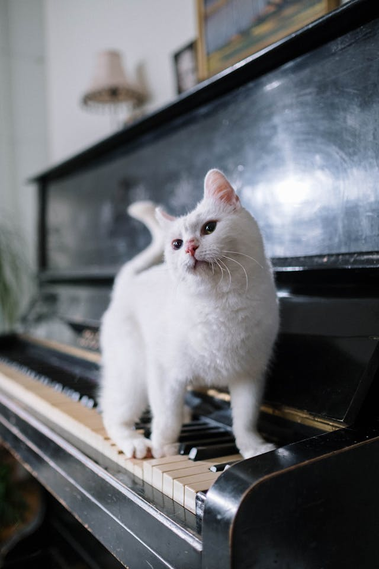
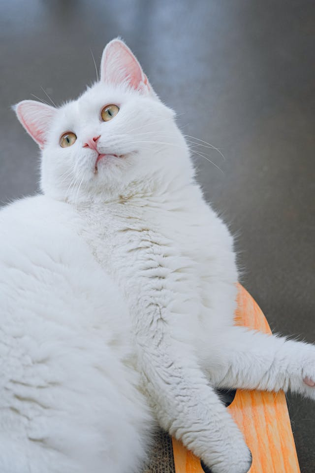
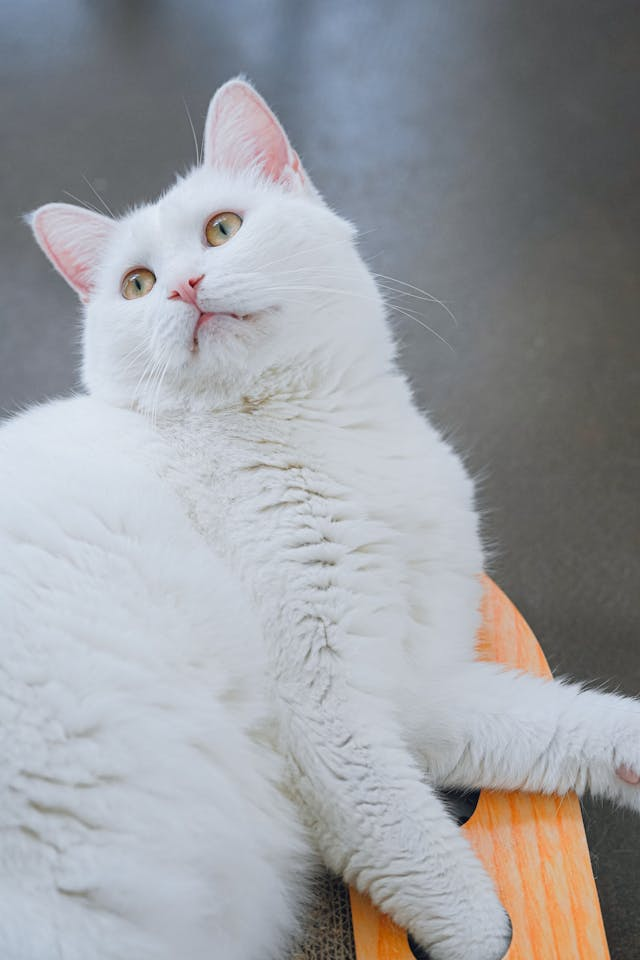

Definition
Mammal of the Felidae family, digitigrade, domesticated, approximately 50 centimeters long from head to the base of the tail, with the tail itself measuring about 20 centimeters. It has a round head, very rough tongue, short legs, and generally soft and thick fur, which can be white, gray, brown, reddish, or black in color.
- Scientific Name: Felis catus
- Species: F. silvestris
- Average Lifespan: 13-20 years
- Normal Weight: 4-5 kg
- Gestation Period: 65 days
Curiosities
- Cats sleep an average of 16 hours a day.
- They can jump up to six times their body length.
- Their purring has a calming effect on humans.
- Cat Whiskers Are as Sensitive as Human Fingertips
- House cats share 95.6% of their genetic makeup with tigers
- A house cat can reach speeds of up to 30mph
Gallery
 

Useful links
For more information, you can visit Wikipedia, NatGeo, and Jackson Gallaxy.